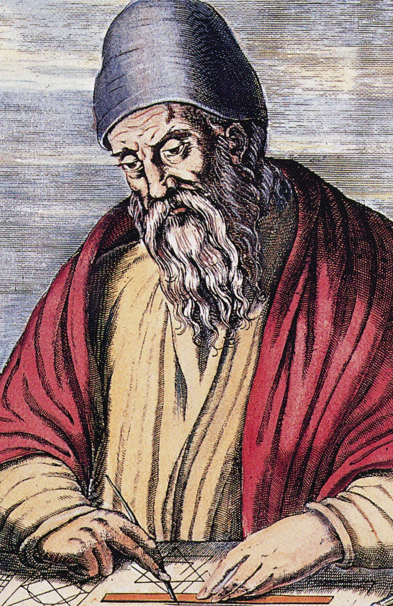

Gödel's incompleteness theorem and the limits of consciousness

Introduction
Often, some of the most profound ideas in our lives sound trivial when we first cross paths with them. For me, Gödel's incompleteness theorem demonstrated this par excellence. While I have discussed some of these ideas before, it had only ever been in passing, never expanding on their mystifying implications outside the fields of maths and logic, particularly on the nature and limits of consciousness and creativity. This essay will deal with exactly this subject matter in two parts: firstly, giving the background and mathematics behind Gödel's incompleteness theorem, and secondly, discussing what the implication of these results might be on the nature of the mind. However, before we get into this, I would like to briefly say the following.
I was inspired to write this article after reading Douglas Hofstadter's 1979 Pulitzer Prize winning masterpiece 'Gödel, Escher, Bach: an eternal golden braid', a book I highly encourage you to read if what you learn here sparks your interest. Hofstadter is an author with an unparalleled capacity for imparting deep and technical insight to his readers while interweaving wit, creativity, and playfulness into every atom of his prose. To fully describe the significance and beauty of Gödel's results, he covers an incredibly broad array of subjects, effortlessly leaping from maths to computer science, from molecular biology to Zen Buddhism. To do these ideas the full justice they deserve is a task too large for one article. As a result, while writing this I was very conflicted as to what the minimum amount of information is that I would need to communicate a sufficiently deep understanding of the matters at hand. I've tried my best to keep this article as brief and non-technical as possible, but some level of technicality was needed in the areas where analogy was not up for the task. If mathematics is usually a subject matter that you shy away from, I implore you to trust your intellectual capabilities and press on as this is an idea unique in both beauty and profundity that I believe is as good a testament as any to the inherent value of the pursuit of truth. With this in mind, let us begin.
Part I
The state of mathematics
To understand the motivation behind the efforts of Kurt Gödel, it would be prudent to first have a look at the intellectual climate in the years preceding the publication of his theory in 1931. The 19th century saw leaps and bounds in the field of mathematics and the 20th was in no rush to decelerate this trend. At the turn of the century, formalised systems of mathematics and logic were becoming increasingly popular, and also increasingly powerful. There was an optimistic belief that if we could perfectly formalise mathematics, with number theory at its core, we would be able to gain a complete and perfect knowledge of the field, in effect, ending the study of it. As a point of clarification, number theory is simply the branch of mathematics that deals with propositions about the naturals number i.e. 0, 1, 2, 3, etc. Statements such as '6 is an even number', '5 squared equals 25', and 'There are infinite prime numbers' would all belong to number theory. While this may seem like a trivial subject matter for the minds of professional mathematicians, there are still many simply stated number-theoretical problems that have remained unsolved after hundreds of years. Two of the most famous of these are Goldbach's conjecture, which can be stated as follows:
Every even whole number greater than 2 is the sum of two prime numbers
and the twin prime conjecture which can also be stated succinctly as the following:There are infinitely many twin primes; pairs of primes that differ by 2
Both of these results have been verified up to exceedingly large numbers, but as for the possibility of general proofs, or even if such proofs are possible, we are none the wiser. It is not only the properties of the natural numbers, but also of the formal systems of number theory themselves which concern mathematicians (or meta-mathematicians in this case). While there are many interesting properties to investigate, two of the most important, which will also be the subject matter of this essay, are completeness and consistency. These are each fairly simple ideas to grasp and can be summarised as follows:If a system is complete, all true statements in a given field can be derived from it.
If a system is consistent, it produces no contradictions.
Why are these desirable qualifications? Imagine some system of number theory that is both consistent and complete. If we are given any number-theoretical proposition, such as the two mentioned above, to verify whether it is true or not, we would no longer need to leverage the minds of mathematicians, but rather merely beseech our formal system, like the oracle at Delphi, if a valid derivation for that statement exists. If it does that statement is true, if it doesn't, it is false. End of discussion. Conversely, we could say the following: if we possessed such a system and left a computer with a knowledge of its rules and restrictions to churn out theorems, we would produce an exhaustive, albeit infinite, list of all true statements of number theory. Needless to say, it is understandable why some of the greatest minds of the generation, Gödel being one of them, made this herculean effort their lives work. Despite the inevitable result of this being lines of mathematicians at the job centre, many had an incurably optimistic view of a future in which we possessed such a tool. They believed humanity would enjoy a new-found power and wisdom from being the proprietors of the ultimate arbiter of truth. Given the still logically ambiguous world, we inhabit today, you might've guessed that this pursuit turned out to be chimeric, and the knockout blow was to be delivered by Kurt Gödel and his eponymous theorem.
In the championship match for completeness, Gödel's chief opponent was Bertrand Russell, one of the towering intellects of the 20th century and co-author of the three-volume work 'Principia Mathematica', whose final volume was published in 1913. PM was a mammoth effort between himself and Alfred North Whitehead to create a formal system of unprecedented scope and power that, at least they presumed, was to be the last we'd ever need. PM's predecessors had been plagued with logical inconsistencies which, at least in Russell's view, were all rooted in the issue of self-reference, or in other words, the ability for a system to talk about itself. This is an idea at the heart of Gödel's construction that we will revisit at numerous points throughout this essay. The simplest self-referential paradox that we can discuss is known as the Epimenides paradox which can be stated simply as:
“This statement is false”
A few moments of thought should provide some elucidation as to why this proposition is paradoxical. The self-reference here can be traced to the inclusion of the phrase “This statement”, a technique that may seem straightforward, but requires a surprising amount of implicit knowledge on behalf of the reader. The details of this are an interesting discussion in their own right but are not something we will get into here. PM was meticulously crafted to avoid this kind of construction by being built upon a strict hierarchy of 'types', which could only talk about objects of a lower type than themselves along with a host of other restrictions. Funnily enough one of the motivating reasoning for Russell and Whitehead's work was to develop a rigorous proof for the fact that 1+1=2, a proposition that took them 900 pages of dense formal logic to prove. As you can imagine, while it was a milestone for mathematicians, Principia Mathematica isn't the most riveting piece of literature ever produced. For almost two decades Russell and Whitehead believed their efforts to be successful, that is until Gödel demonstrated a brutal fact of reality, that creating a formal system of number theory that is both powerful and incapable of producing self-referential statements is impossible. In fact, it is because of this very power that formal systems are fundamentally and inescapably self-referential, no matter what precautions you take. The reasoning for this is deep and inextricably linked with the very nature of logic, meaning, and mathematics. However, before we expand on these reasons it might first be helpful to clarify what exactly are we referring to when we use the phrase 'formal system'?What makes a formal system?
We have used the term 'formal system' very loosely up until now, and while you may have developed an intuitive sense for what it would contain, a more rigorous definition is needed to make sense of the later points in our discussion. The two key components that we need to understand are axioms and typographical rules. Firstly, an axiom is any proposition that you assume to be true within your system. This assumption of truth might seem antithetical to the spirit of a formal system, but for a host of reasons that would take another article to discuss, it isn't logically possible to generate statements that we can say are unequivocally true. It may seem like accepting this fact would kill our hopes of creating a truthful formal system before we're even out of the gate, but looking at what typically passes for axiomatic truth will ease these fears a little. The oldest formal system is Euclid's geometry, of which the five axioms are as follows:
- Things which are equal to the same thing are also equal to one another.
- If equals be added to equals, the wholes are equal.
- If equals be subtracted from equals, the remainders are equal.
- Things which coincide with one another are equal to one another.
- The whole is greater than the part.
The second element of import is the system's typographical rules. These are simply the set of logical operations that you are allowed to perform on the elements of your system. In the case of Euclid's system, this would include something like drawing a line between two points or constructing a circle centred at some point. However, the systems that we will be working with, something which will be explained in more detail shortly, are made up of typographical symbols, as opposed to abstract elements like lines and points. As such, a more representative idea of what our operations will look like are things like the AND/OR/NOT logical operations, addition, subtraction, and a host of what are known as qualifiers.
While Gödel used PM as the basis for his original construction, we will be using a much simpler system known as typographical number theory or TNT, developed by Douglas Hofstadter, for ours. TNT contains the minimum amount of expressive power needed to apply Gödel's trick, and as such we can say that the same results can be applied to any system of an equal or greater expressive power, a class to which PM and many others belong. A more detailed explanation of the system can be read here, but a full understanding isn't necessary to grasp the conclusion. To allow us to get a taste of what actual strings of TNT look like, let's quickly go over two examples.
~∃a : Sa = 0
This can be interpreted as 'There does not exist a number 'a' such that the successor of 'a' is 0, or in other words, 0 is the first natural number (TNT cannot make statements about negative numbers). To give some more exposition, the '~' can be treated as a negator or simply saying 'not' before some statement. The thing that looks like a backwards E is known as an existence qualifier and can be interpreted as saying 'there exists'. Lastly, it is important to note that the only numeral in TNT is 0, all subsequent numbers are represented by prepending the appropriate number of 'S' symbols known as successors. Here's another statement:∀a : ∃b : (a+b) = (SSS0 ∙ a)
This can be interpreted as 'For all 'a', there exists some 'b' such that 'a' plus 'b' equal 3 times 'a''. The only new symbol here is the upside-down A, referred to as a universal qualifier and is read as 'for all'. To test your understanding, try and translate the following string:~∃a : (a ∙ a) = SSSSS0
Now that we've laid the groundwork, let's finally look at what exactly Gödel's construction entails.The Gödel string
To prove that TNT is incomplete, all we need to show is that there exists at least one true statement of number theory which is not a theorem of TNT. The term 'theorem' in this context simply means a string that can be derived from our system's axioms by applying valid typographical rules. An example of a non-theorem would be the following string:
~0 = 0
While this may be a 'grammatically correct' string of TNT, there is no way to start from any of the system's axioms and arrive at this conclusion. However, this is not exactly the string we're after as its interpretation, 'zeros does not equal zero', is false, and as such rightly shouldn't be derivable in our system. The string we are looking for, known as the 'Gödel string' or simply 'G' can be interpreted as follows:This string is not a theorem of TNT
How do we know this string is true? Let's first assume that it is false. If this were the case, then in fact G would be a theorem of TNT, thus entailing a contradiction. Since a contradiction cannot logically follow from true propositions, our original assumption, that G is false, must be incorrect. Therefore, G must be true, and thus there exist true statements that are not theorems of TNT, or in other words, TNT is incomplete. It might be reasonable for us to challenge the validity of this proof on two grounds. Firstly, 'If TNT is a system purely designed to talk about numbers, how is it possible that there exists a string of TNT which talks about not numbers, but another string of TNT, itself no less?' and secondly, 'How is this a statement of number theory?'. Assuming that TNT was crafted on the same principles as PM and avoids any opportunity for self-referential statements, how have we created one anyway? The answers to these questions are all rooted in the same idea: Gödel numbering. The working principle behind Gödel numbering, which we will explain in the next section, sounds so trivial that it's hard to believe its destructive power, but upon further reading, I hope that I will communicate why this initial judgement would be misinformed.Gödel numbering

The process of Gödel numbering a formal system can be understood simply as the following:
Mapping each typographical symbol to a unique number, and thus each typographical operation to a corresponding arithmetical operation.
Just from this definition alone, it is by no means obvious how we arrive at Gödel's string, so to understand this jump there are two other key concepts which we must discuss first: isomorphisms and metalanguages. An isomorphism is a fairly simple but also fairly broad term that can be understood most simply as an information-preserving transformation. This idea of preserving information is the crucial distinction between isomorphisms and other kinds of transformations. We should know if this criterion has been met by the fact that we will be able to translate back and forth between the two 'spaces' of the isomorphism without limit. To introduce this idea, we will start with a simple isomorphism and get progressively more complex. To begin with, imagine staring into the mirror and noting what the reflection of each object in the room looks like. Apart from things being flipped left to right, they are almost entirely identical. We could say that there exists a rather trivial mapping (we can use this term interchangeably with transformation) between objects in the real world and their image in the mirror world. This mapping constitutes the basis of a simple isomorphism. In this instance we know information is preserved perfectly because, given a full inspection of some object in the mirror world, it would be fairly straightforward to construct its counterpart in the real world and vice versa. A slightly more complex isomorphism, with a much closer resemblance to Gödel numbering, is the mapping discovered by Descartes between lines on a coordinate grid and polynomial equations. This is an idea encountered so frequently during one's secondary maths education that one starts to become blind to its true nature, but it is indeed just another mapping between two spaces. In this case, the information preserving test is the fact that we can find an equation from a line's intersections with the x-axis and equivalently draw a line from the roots of its corresponding polynomial. Now that we've developed our intuition as to what constitutes an isomorphism, it is time we move onto our next key idea, metalanguages.